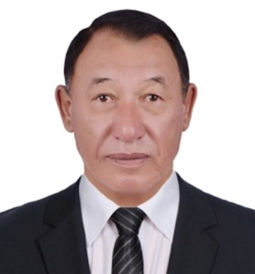
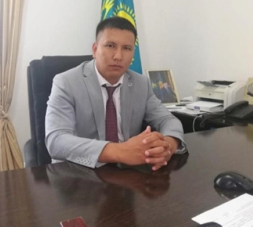

Зайсан ауданы — Шығыс Қазақстан облысының қиыр шығысындағы әкімшілік бөлік. Жер аумағы 10,5 мың км². Аудан орталығы – Зайсан қаласы.
Географияасы
Зайсан ауданы облыс территориясының оңтүстік-шығыс бөлігінде орналасқан. Ауданның жері шұрайлы, суы мол, жайылымы керемет (Сауыр, Сайқан, Маңырақ, Ертіс, Ақжан, Қабырғатал) сияқты киелі жер. Оның жер асты қазбасы – мұнайға, көмірге, жанатын сланецке, жоса – бояуға, құрылысқа жарамды әкке, құм мен топыраққа толы, жасыл алқапты орманы бар өңір.Сауыр таулары ауданның оңтүстік – шығысы бөлігінде орналасқан. Сауыр тауының ең биік нүктесі Мұз –Тау тауы, биіктігі 3500-3816 м дейін жетеді. Солтүстік батысқа қарай биіктігі 1500 – 1800 м дейін аласарады.Аудан климаты құбылмалы, құрғақ. Қысы ұзақ және суық. Жаздағы ауаның температурасы жоғары және ыстық. Атмосфералық орташа жылдық жауын – шашындары 120-180 мм. Тау беткейлеріне көтерілген сайын ылғалдылық артып, ауа температурасы кемиді. Тау басында ол таулы тундралық климатқа дейін өзгерген. Қар қарашаның екінші жартысында түсіп, сәуір айының басында кетеді. Қыстың аяғына қарай орташа қардың қалыңдығы 20- 30 см, басқа жылдары 5 см 40 см дейін өгеріп отырады.
Аумағы
Жалпы аумағы – 1 044 424 га.
Шекаралары
Аудан оңтүстігі мен шығысында Қытай Халық республикасымен, батысында Тарбағатай ауданымен шекаралас. Ауданның әкімшілік орталығы – Зайсан қаласы. Аудан орталығынан облыс орталығы Өскемен қаласына дейінгі қашықтық – 460 шақырым, Жаңғызтөбе теміржол бекетіне дейін 378 шақырым. Көлікткің негізгі түрі – автомобиль.
Халқы
Тұрғындары 36 979 адам (2019). Ұлттық құрамы: қазақтар – 97,36%, орыстар – 1,93%, басқа ұлт өкілдері – 0,71%. Зайсан ауданы бойынша 10 дiни бiрлестiктер бар: 1. Мұсылмандар бiрлестiгi. 350 тұрақты мүшелері бар, ауданда 7 мешіт үйі жұмыс істейді. 2. Православие шіркеуі. 45 тұрақты мүшелері бар. 3. 2 протестанттық секта - Церковь Евангельских христиан баптистов "Иман жолы" (қазақ тілінде жұмыс жүргізеді), тіркеу жұмыстарын қайта жүргізуде, және Церковь Евангельских христиан баптистов (орыс тілінде жұмыс жүргізеді.)
Инфраструктура
Зайсан ауданында 27 мектеп бар, оның ішінде: 17 орта, 8 негізгі, 2 бастауыш.
Оқушылар саны – 6332, мұғалімдер – 930.
13 бала-бақша бар, оның ішінде:
– 5 ауылдық,
– 8 қалалық,
– 7 мемлекеттік,
– 5 жеке меншік,
– 1 мекемеге қарасты.
Бала-бақшалар тәрбиеленушілерінің жалпы саны – 1042.
Сартерек ауылында «Бәйтерек» демалу-сауықтыру орталығы жұмыс істейді.
Өндіріс
Экономиканың басты саласы – ауыл шаруашылығы. Ауыл шаруашылық құрылымдары суармалы және тәлімді егін шаруашылығымен, малдың дәстүрлі түрін өсірумен, құс өсірумен айналысады.
Тұтастай өнеркәсіп өнімі 2017 жылдың 01 желтоқсанына 9035,3 млн. теңге болды, табиғи индекс көлемі 103,6%. Кен өндіру және карьерлерді қазу 8109,9 млн.теңге, өткен жылмен салыстырғанда 103,1%, өңдеу өнеркәсібінің өнімі 497,7млн.теңгені құрады, өткен жылғыдан 164,8%, оның ішінде тамақ өнеркәсібінің өнімі 288,3 млн.теңге индексі 184,4% болды.
Ауданның өнеркәсіп құрылымында тау-кен өнеркісібі 81,0 пайызды, өңдеуші өнеркәсіп 11,0 пайызды, электр энергиясы мен суды өндіру мен үлестіру 8,0 пайызды құрайды. Ауданның тау-кен өндірісін көмір өндірумен айналысатын «Сайқан» ЖШС мекемесі , мұнай мен газ ошақтарын табатын «Тарбағатай-Мұнай» ЖШС көрсетеді. «Сайқан» ЖШС ауданның халқы мен бюджеттік мекемелерін қатты отынмен қамтамасыз етеді. Құрылыс материалдарын өндірумен «СМУ Шығыс» ЖШС айналысады. Өнеркәсіп плиткалар, плиталар, кірпіштер және цементтен, бетоннан жасалған өнімдер шығарады. Тамақ өнімдерін сонымен қоса сусындар өндірумен шағын өнеркәсіптер, шаруа қожалықтары және жеке кәсіпкерлер айналысады.
Жер ресурстары
ауыл шаруашылық жерлері – 837,1 мың га,
өнеркәсіп – 3,5 мың га,
жер қоры – 341,326 мың га.
Еңбек ресурстары
Жұмыссыздар қатарына тіркелген адамдар – 617 адам, оның ішінде ерлер – 228, әйелдер – 389, 16-дан 29-ға дейінгі жастар жасы – 250.
Туризім
Зайсан ауданы мәдени-танымдық туризмді дамытуда ірі әлеуетке ие: ауданда 36 тарихи және мәдени ескерткіштер тіркелген, оның ішінде: 10 архитектуралық және 26 археологиялық.
Туристік қызығушылықтың негізгі орындары мыналар:
- «Айка» ш/қожалығы туристерге аңшылық қызмет көрсетеді; «Айка» ш/қожалығының «Кіші Жеменей», «Майшат» пен «Тебеген» учаскелеріндегі базалары келушілерді қабылдауда. «Айка» шаруа қожалығы 2015-2016 жж. (10,0 млн теңгеге) «Кіші Жеменей» учаскесінде туристерге арналған демалыс үйін салып бітірді. «Айка» ш/қожалығы өз қаражаты есебінен 10,0 млн. теңге жұмсап, Зайсан қаласы, Бөгенбай көшесіндегі банк ғимаратын шетелдік қонақтар жататын үйге айналдырды.
- «Бәйтерек» спорттық-сауықтыру базасы қысқы демалысқа белсенді спорт түрлерімен айналысуды ұсынады (коньки, шаңғы, қар үстінде жүретін машиналармен серуендеу), жазда жаяу және атты серуендер ұйымдастыру жоспарлануда,
- Зайсан көлінде демалу (тап-таза су, идеалды жағажай, балық аулау, катамарандармен қыдыру, көл үстінде серуендеу, ).
Аудан Қытай Халық Республикасымен шектесетіндіктен «Майқапшағай» кеден бақылау бекеті арқылы шоп-турларға негізделген сауда туризмі дамуда.
Басшылық
Қажанов Дулат Зайсанбекұлы
Жалпы ақпарат
Білімі
1984 жылдың 15 маусымында Шығыс Қазақстан облысы Зайсан қаласында дүниеге келген. Ұлты қазақ. Білімі жоғары. 2007 жылы С.Аманжолов атындағы Шығыс Қазақстан мемлекеттік университетін «Мемлекеттік менеджмент және жергілікті басқару" мамандығы, 2011 жылы "Экономика" мамандығы бойынша тәмәмдаған.
Мансап
2007-2009 жылдары - Шығыс Қазақстан облысының кәсіпкерлік және өнеркәсіп Департаментінің кәсіпкерлікті дамыту бойынша мемлекеттік саясатты іске асыру бөлімінің жетекші маманы.
2009-2010 жылдары - Шығыс Қазақстан облысы әкімі аппаратының ұйымдастыру-инспекторлық бөлімінің агроөнеркәсіп және өндіріс кешенін талдау секторының бас маманы.
2010-2013 жылдары - Шығыс Қазақстан облысы әкімінің көмекшісі.
2013-2018 жылдары – Шығыс Қазақстан облысы Ұлан ауданы әкімінің орынбасары.
2018-2022 жылдары Шығыс Қазақстан облысы Күршім ауданының әкімі.
2022 жылдың 6 қыркүйегінен Шығыс Қазақстан облысы Зайсан ауданының әкімі.

Орынбаев Әнуарбек Әмірханұлы
Зайсан ауданы әкімі аппаратының басшысы
Телефон:
8 72340 21700
Электрондық пошта:
a.orynbaev@akimvko.gov.kz

Тілемісов Серік Нәсіпқазыұлы
Аудан әкімінің орынбасары
Телефон:87234021300
Электрондық пошта:se.tlemesov@akimvko.gov.kz
Байланыс номері
(000) 000-0000Мекен-жай
Шығыс Қазақстан облысыЗайсан, 070701
Қазақстан Республикасы